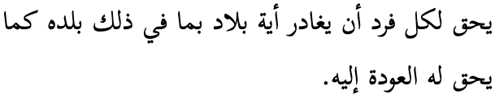
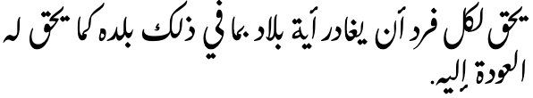
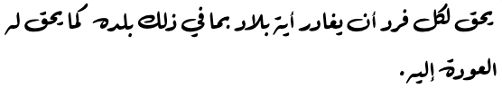
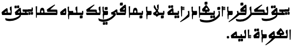
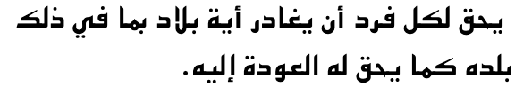
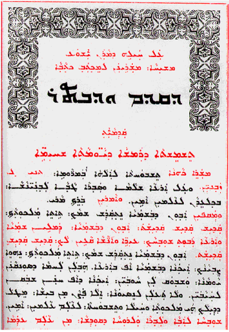
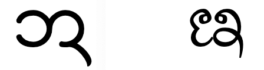

Many scripts use different types, or styles, of font to render text. A style is typically common to a number of individual fonts, and applies identifiable visual differences that can be contrasted with other styles.
The use of the different styles is not just cosmetic; they often involve one of the following:
distinguishing some content from other content (eg. to distinguish headings from body text),
representing a regional or audience identity (eg. for the Arabic script, the preference for Nastaliq fonts in Urdu and Kashmiri, or Kano style fonts in Nigeria, rather than the more common Naskh style fonts),
incorporating a set of characters that differs from font style to font style (eg. Syriac script font styles correspond to different character repertoires for Western, Eastern, and Estrangela styles),
allowing different behavioural features (such as the differences in justification behaviour for Naskh, Ruq’ah, and Nastaliq fonts).
This article provides a non-exhaustive list of examples where choice of a font style may have a practical application related to the above list. The existence of these distinct styles, with their practical influence on the reading of the text, has implications for fonts on the Web – you would typically want to choose a fallback font that has the same style, if one is available. We'll look at some implications for generic fonts and fallback mechanisms near the end.
By clicking on 'Show as plain text' in the figures you can see a plain text rendering of the characters in an example. The plain text will use whatever fallback font is available on your system for the language in question, but there are also links to pickers, where various fonts can be applied, while also allowing you to analyse the text.
Adlam
The Adlam script is used to write Fulani and other African languages. The Fulani are a large, historically nomadic tribe of Africa numbering more than 45 million and spread across Senegambia (Senegal) to the banks of the Nile and the Red Sea.
Adlam usually uses a Cursive font style, ie. letters in a word are joined up, however a Non-cursive font style is sometimes used for book, article, and section titles, and it is also used for educational content (because the unconnected script is easier to learn).
Fallback from a non-cursive font to a cursive font would reduce the distinctiveness of titles, but would also have an impact on readability for educational materials.
Non-cursive font used for the section title and figure caption in an Adlam page. The body text is cursive.
Arabic
The Arabic script is the second most widely-used script in the world, after the Latin alphabet. It is used for various other languages which tend to include sounds that are not used in the Arabic language, and therefore fonts for those languages need to cover different repertoires of characters, but often also require special glyph shapes for commonly used characters.
Arabic orthographies can also be grouped into a number of font styles, some of which are more common for particular languages, while others can be used interchangeably for the same language. Sometimes the variations are adapted to usage, for example book text vs. inscriptions; sometimes the variants reflect regional, cultural or stylistic calligraphic preferences.
Note: all the examples shown in this section are based on a phrase in the Arabic language, to make it easier to compare the styles. In reality, you would expect the nasta'liq font style to be applied to text in a language such as Urdu, or Kashmiri.
The Naskh font style is the most prominent style for the Arabic language, and has become the default form of Arabic language content in most contexts.

Show as plain text.
يحق لكل فرد أن يغادر أية بلاد بما في ذلك بلده كما يحق له العودة إليه.
Arabic is commonly written in the naskh font style.
The Nasta’liq font style is the standard way of writing Urdu and Kashmiri languages. It is also often a preferred style for Persian text. Key features include a sloping baseline for joined letters, and overall complex shaping and positioning for base letters and diacritics alike. There are also distinctive shapes for many glyphs and ligatures.
Additionally, nasta’liq styles require different algorithms for such things as justification and line-breaking, compared to standard naskh styles.

Show as plain text.
يحق لكل فرد أن يغادر أية بلاد بما في ذلك بلده كما يحق له العودة إليه.
The same Arabic language text rendered with the Awami Nastaliq font.
See more information about the nasta’liq style, as used for Urdu.
Falling back to an arbitrary font (usually naskh) rather than using a nasta’liq font significantly affects the identity and the readability of the content for speakers of Urdu and Kashmiri.
The Ruq’ah font style is commonly used in education, in official documents, and for every-day writing. It is known for its clipped letters composed of short, straight lines and simple curves, as well as its straight and even lines of text. It is a functional style of writing that is quick to write and easy to read. It also doesn’t extend baselines during justification or emphasis, like a naskh font does. In 2010's rebranding of Amman, Jordan, a ruq'ah font family was created to serve as an italic face alongside a naskh regular font. Monotype has an interesting article on the development of ruq'ah.
Falling back to a non-ruq’ah font removes the effect of handwritten text and may remove the distinction between italic vs. regular styles in signage and other content using the FF Amman font in Jordan.

Show as plain text.
يحق لكل فرد أن يغادر أية بلاد بما في ذلك بلده كما يحق له العودة إليه.
The same Arabic language text rendered with the Waseem font released with Mojave OS, which is based on the ruq'ah style.
The Kano font style is a common way of writing Hausa, especially in Northern Nigeria, in the ajami script, and like other West African writing it is based on Warsh (Warš) forms, which incorporate Maghribi (North African) characteristics. Text written in the Kano style will include glyphs for a number of African characters that may not be available in the average naskh font.
Falling back to an arbitrary font will remove the identity of the content, and is likely to cause rendering failures for African characters. In fact, there is another orthography that looks much closer to naskh that is used with hand-written adaptations for the newspaper Al-Fijir, based on the Hafs orthography, but when writing in that orthography you need to use different code points from those used for the Kano style. So falling back to this would presumably lead to some confusion.

Show as plain text.
يحق لكل فرد أن يغادر أية بلاد بما في ذلك بلده كما يحق له العودة إليه.
The same Arabic language text rendered with the Alkalami font.
The Kufi font style is the original style used for the Koran, but is not used for newspapers or official content today. However, it is used in modern content for logos and other stylised applications.
Falling back to an arbitrary font would lose the decorative distinctions provided by the kufi font. This is, however, not quite the same as failing to render a Latin decorative font, since for Arabic this is a font style, and there are likely to be other kufi style fonts on the system that could retain the decorative distinction intended.

Show as plain text.
يحق لكل فرد أن يغادر أية بلاد بما في ذلك بلده كما يحق له العودة إليه.
The same Arabic language text rendered with the KufiStandardGK font.
Chinese
In Chinese different font styles tend to be applied to different bits of content in the same document to distinguish one feature of the content from another. Remember also that bolding, italicisation and underlining are not native traditions for Chinese, and so font choice is often used to distinguish one type of text from another. This is actually a common technique in a number of scripts, not just Chinese.
Another important distinction in Chinese relates to whether we are dealing with Traditional Chinese glyph shapes (eg. in Taiwan) or Simplified Chinese glyph shapes (eg. in Mainland China). Often there will be separate code points in Unicode text for the two styles, but in many other cases the code point is the same but the shape of the rendered glyph will need to be slightly different. The styles described just below apply to text written in both Traditional and Simplified Chinese.
The Song font style is the most common typeface used in Chinese printing. Song is commonly used in text, headings and annotations. When used in headings, the characters will appear in a bold face, so as to distinguish the heading from the text.
The Kai font style provides calligraphic styles for Chinese characters. It shows notable handwriting features. Kai is mainly used in text that needs to be differentiated from the rest of the content, for example, headlines, references, quotations, and dialogs. (It is rarely used for emphasis, because of its similarity to Song.)
The Hei font style, also known as Gothic, is a type style characterized by strokes of even thickness, reduced curves, and a lack of decoration. It is commonly used in headlines, signs, and personal names in dialogs. In body text, characters in Hei style with thicker strokes typically indicate emphasis. Traditionally, publications rarely apply the Hei style for content, but with the growing influence of the World Wide Web and the digital publishing industry, some publications are starting to experiment with Hei in this context.
The Fangsong font style lies between Song and Kai. It is commonly used in secondary titles and isolated paragraphs such as quotations or highlighted sentences.
Fallback to a single, arbitrary font is problematic because nullifies the distinctive characteristics of the text to which one of the above font styles has been applied, for example removing emphasis.
Japanese
The Japanese language is written using four scripts: Kanji (Han), Hiragana, Katakana, and Latin characters are all mixed together in a sentence.
The kanji characters are derived from Han characters originally used in Chinese. Many of the Japanese and Chinese characters are unified to the same code point in the Unicode repertoire, however over time small but systematic, language-related changes have appeared in the glyph shapes of some characters compared to their Chinese equivalents. It is important to choose fonts that present the user with the correct glyphs. fig_ja_zh_fonts provides some examples.
The same code points, displayed with a Japanese font (top) and Chinese font (bottom).
Besides the need to choose fallback fonts that match the language of the text, Japanese also has some recognisable font styles. Two well-known font styles are often called Mincho and Gothic. The former has strokes with fine gradations of stroke width, whereas the latter has darker strokes with little gradation. For fallback on the Web, these styles are usually equated with serif and sans-serif, respectively (see also sec_monoline_modulated).
A slanted font style (អក្សរជ្រៀងâksâr chriĕng) may be also be used for whole documents or novels. The oblique styling has no effect on the semantics of the text.
The Mool font style (អក្សរមូលâksâr mul) has more rounded letter shapes and includes more ligated forms. It is commonly used for titles and headings in Cambodian documents, books, or currency, as well as on shop signs or banners. It may also be used to emphasise important names or nouns. The regular weight of these fonts tend to look like bold text.
The same Khmer text in the rounded (Mool) font style.
Fallback from the round font style to another style would remove significant, intentional differentiation in the text, including emphasis and important names or nouns.
An example of a page that mixes upright (regular and bold) with mool font styles. (Click on the image to see bigger.)
N'Ko
N'Ko is used in Guinea and Côte d'Ivoire as well as Mali, especially for publications relating to indigenous knowledge, including descriptions of medical rituals, traditional poetry, and philosophical works, as well as textbooks and a transcription of the Qur'an. Its use is expanding rapidly.
N'Ko usually uses a Cursive font style, ie. letters in a word are joined up, however a Non-cursive font style is sometimes used for book, article, and section titles, and for other display text.
Fallback from a non-cursive font to a cursive font would reduce the distinctiveness of titles, but would also have an impact on readability for educational materials.
A non-cursive font used for a title in an N'Ko page. The body text is cursive.
Syriac
The Syriac script is used by several Assyrian communities, and for liturgical use by the Syrian church.
Syriac has 3 major variant writing styles, Estrangelo, Serto (Western), and Madnhaya (Eastern). The code points for the consonant letters are the same, but the shapes of the consonant letters, and the code points and shapes of vowel diacritics can vary significantly. Also, it is normal not to use code points for vowel diacritics in estrangelo text (ie. it is an abjad), whereas when writing the Turoyo language (western style), or generally the Assyrian dialects (eastern style), the script has evolved into one that is fully vowelled (ie. alphabetic).
The Estrangelo font style is used in all ancient manuscripts. West and East Syriac text uses it for headers, titles, and subtitles. It's also the current standard for Western scholarship.
The same text in the Serto font style, but with various combining characters to represent vowels, etc.
The Madnhaya (Eastern) font style is used for modern East Syriac languages using Swadaya (Aramaic) texts, and in West Syriac texts for headers, titles and subtitles.
The same text in the Madnhaya font style, except that different code points are used for the combining characters that represent vowels and other phonetic information.
In fact, the Estrangelo style can be subdivided into two types, Estrangelo Edessa and Assyrian Estrangela, for use alongside Western and Eastern text, respectively. For a comparison see this chart.

An East Syriac text with Assyrian Estrangela styles in the headings.
In the case of headings, falling back to a different writing style would reduce the distinctiveness of headings in languages that use East & West Syriac. But in general, inappropriate fallback would just look completely wrong for any content, since different languages and regions use a particular font style, and they are not interchangeable. Note that the choice of style generally depends on the language, but not always.
Tai Tham
The Tai Tham script has 2 main orthographies. One is used for writing the Tai Khün language, and the other for writing the Lanna (or Northern Thai) language. The general style of glyphs in each orthography tends to have its own characteristics. In addition, the code points for the letters of each language are mostly, though not always, the same, but the shapes of certain letters vary systematically.

Show as plain text.
ᩋ
The typical shape of U+1A4B TAI THAM LETTER A in Tai Khün text (left) and Northern Thai text (right).
In the following two examples the code points are the same, to make it easier to compare styles. In reality, the text would be different in one language and the other.
The Tai Khün font style is typically used for the Khün language.
The same text in a font style commonly used for Northern Thai.
Falling back to a different writing style could affect the identity of the text. It is also possible that a font used for Tai Khün may not cover all the glyphs needed for Northern Thai, and vice versa.
Tamil
The Tamil script is used for the Tamil language, with around 65,000,000 speakers, and for several minority languages.
Tamil Nadu applied significant orthographic reforms in the latter part of the 20th century. But the orthographic reforms only spread in India and the digital world, whereas Sri Lanka, Singapore, Malaysia, Mauritius, Reunion and other Tamil speaking regions continue to use the traditional syllables.
Proposed reforms of 1978. For most reformed forms, only the font glyphs change and the underlying code points remain the same. Not all proposed changes were adopted.
In some fonts the glyph for U+0BB0 TAMIL LETTER RA looks identical to U+0BBE TAMIL VOWEL SIGN AA, and this can create visual ambiguities in certain contexts. A government regulation in Malaysia and Singapore requires the glyph for U+0BB0 TAMIL LETTER RA to always have a small 'tail', whereas in India often the 'tail' appears only where the visual context would create ambiguity.
U+0BB0 TAMIL LETTER RA with a small 'tail' (left) and without (right).
These differences can also create a situation where you might want to ensure that a fallback font follows one particular set of rules for glyph shaping. If you don't have the ability to control which fallback font is selected, you can't ensure that the output follows the style you want.
Thai
The Thai script is used to write the Thai language, with around 60,000,000 speakers, plus almost 40 other languages.
Glyphs in some Thai fonts have loops and in other fonts they don’t have loops. The Loopless font style is considered to be more contemporary and modern than the Looped font style, and is mainly used for advertising and titling. The distinction doesn’t necessarily map to that of serif vs sans – Noto, for example, provides both serif and sans Thai font faces, but they both have loops. On the other hand, Neue Frutiger Thai offers traditional (looped) and modern (loopless) alternatives as part of the same font family (each with both regular and italic substyles). There is a large selection of looped fonts and a large selection of loopless to choose from.
The Sukhumvit Set font uses modern unlooped glyphs. (The text is the same as for the previous figure.)
It’s likely that replacing a looped font with an unlooped one, or vice versa, during fallback would significantly change the tone of the content.
Monoline and modulated font styles
The distinction between fonts with serifs and without (sans-serif) is often thought to be extendable to most writing systems, but in fact the predominant distinction seems to be instead between monoline and modulated font strokes.
In a monoline font, strokes are generally the same width and stroke ends are usually squared off. In a modulated font strokes have varying widths and usually have tapered or pointed ends.
This distinction doesn't always apply clearly: in some cases, the choice between these two categories is difficult to make, and some of the larger, multilingual fonts (esp. Arial Unicode MS) may render some scripts with modulated glyphs and others with monoline, all within the same font. However, it tends to be a useful distinction for many fonts.
The same Javanese text in a font that has monoline strokes.
Summary
When a user reading a page hasn't installed the font that the content author preferred, the browser will fall back to another font on the user's system in order to display the text. CSS already defines a set of font styles, such as serif, sans-serif, monospaced, fantasy, etc. so that the browser can try to substitute a similar font.
These existing categories don't fit well for many non-Latin writing systems, which have their own types of categorisation. Such different font styles are often functional in that they may be used to distinguish one item of text from another, or they may have regional or cultural implications for the reader. Falling back to an arbitrary font, ignoring the rules of the writing system in question, can break that functionality.
Use of webfonts can help address the problems here, but not always. For example, webfonts are problematic for scripts with large character inventories. Many authors may also not be able to provide webfonts for their content. But besides that, it has also been suggested that content authors may sometimes not need to choose a specific set of fonts for their page, but may be happy to simply name generic font styles and allow the browser to use whatever fonts are available to the reader to display the text. This could allow the choice of font to be influenced by the user's preferences – for example, to use more accessible fonts.
The key factor here is that the generic font names should map to appropriate fonts, so that the functional or regional implications of the fonts on the user's system for a given language are recognised and preserved during font fallback.